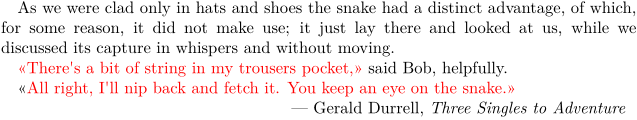
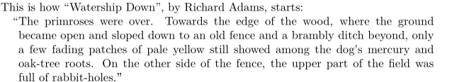

Contents
Summary
The instances of \startdelimitedtext ... \stopdelimitedtext wrap some markup around a (usually short) block of text.
Instances
| \startquotation ... \stopquotation | Unlike \quotation, \quote, and \startquote, \startquotation sets its contents off in their own, slightly narrower paragraph. It differs from \startnarrower in that it also places quotation marks at the beginning and end of its contents.
The argument |
| \startquote ... \stopquote | By default, \startquote behaves the same as \quote. |
| \startblockquote ... \stopblockquote | |
| \startspeech ... \stopspeech | |
| \startaside ... \stopaside |
Settings instance
| \startDELIMITEDTEXT[...][...,...] ... \stopDELIMITEDTEXT | |
| [...] | language |
| [...,...] | inherits from \startnarrower |
Description
These instances are defined by \definedelimitedtext and set up with \setupdelimitedtext. But there are also two predefined shortcut commands, so you can set up the \startquote environment with \setupquote and \startquotation with \setupquotation.
Examples
Example 1
-
\setuppapersize[A5] \enableregime[utf] \setupindenting[yes, small] \setupquote[color=red, left=«, right=»] As we were clad only in hats and shoes the snake had a distinct advantage, of which, for some reason, it did not make use; it just lay there and looked at us, while we discussed its capture in whispers and without moving. \startquote There's a bit of string in my trousers pocket, \stopquote\ said Bob, helpfully. \quote{All right, I'll nip back and fetch it. You keep an eye on the snake.} \rightaligned{--- Gerald Durrell, {\it Three Singles to Adventure}}
- 
Example 2
-
\setuppapersize[A5] This is how \quotation{Watership Down}, by Richard Adams, starts: \startquotation[left] The primroses were over. Towards the edge of the wood, where the ground became open and sloped down to an old fence and a brambly ditch beyond, only a few fading patches of pale yellow still showed among the dog's mercury and oak-tree roots. On the other side of the fence, the upper part of the field was full of rabbit-holes. \stopquotation
- 
Notes
See also
- delimitedtext
- \definedelimitedtext
- \setupdelimitedtext
- \startnarrower
- typo-del.mkiv
- \setupquote
- \setupquotation
- \startnarrower for offset text without surrounding quotation marks
- \setupalign to turn hanging punctuation ("protrusion") on or off.
Help from ConTeXt-Mailinglist/Forum
All issues with:
- \startquotation on the mailing list (all results)
- \startquotation on the mailing list (subject only)
- \startquotation on stack exchange
- \startquotation in ConTeXt's source
- \startquote on the mailing list (all results)
- \startquote on the mailing list (subject only)
- \startquote on stack exchange
- \startquote in ConTeXt's source
- \startblockquote on the mailing list (all results)
- \startblockquote on the mailing list (subject only)
- \startblockquote on stack exchange
- \startblockquote in ConTeXt's source